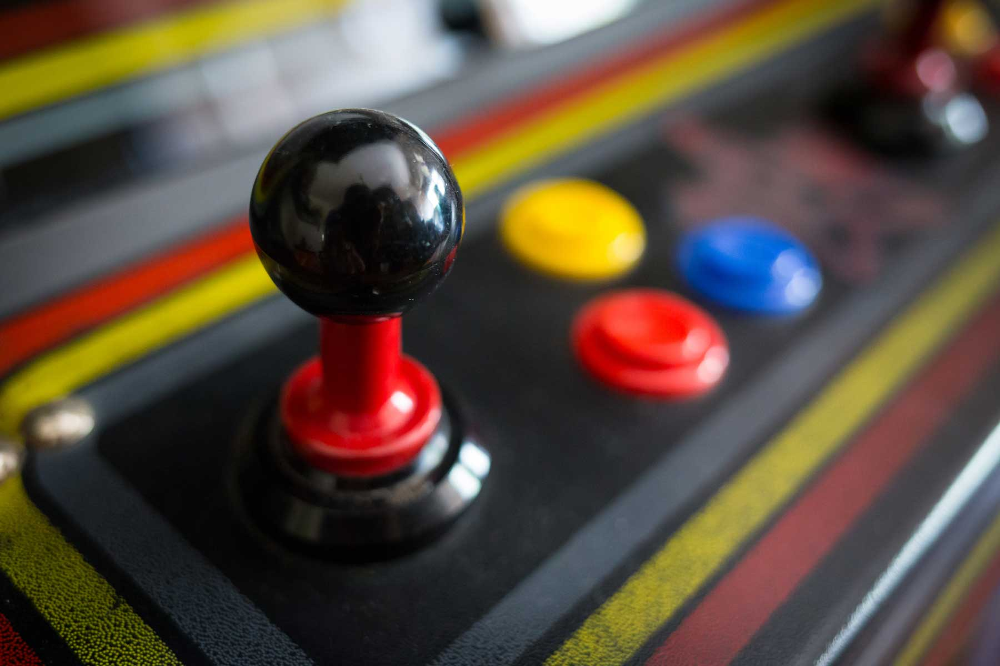

About Gaming Systems
There are about 1000 known home video game consoles. The vast majority of which were released during the first generation: only 100 home video game consoles were released between the second and current generation, 10 were canceled . This list is divided into console generations which are named based on the dominant console type, though not all consoles are of the same type. Some are referred to based on how many bits a major console could process.
The first iteration of each console's hardware, because several systems have had slim, enhanced or other hardware revisions. If a series of home video game consoles begins in a generation and lasts to another generation, it is listed in the generation the series began.
Types of Consoles
- NES Classic
- Sega Genesis
- PlayStation Classic
- Atari Flashback